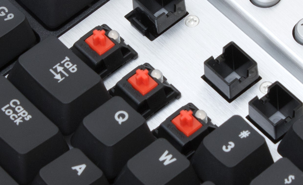

Keyboards and their layouts are definitely one of the pieces of computer hardware that have a lot of controversy around them. Some people swear by the Cherry MX mechanical switches while some others think that clone switches work just as fine and there is no reason to go for the genuine ones. I'll just skip the debate about the switch types (reds vs. blues vs. clears vs. greens vs. etc.). In addition to the type of the switch, keyboards have different layouts with their die-hard fans. People even have argued how using the traditional QWERTY layout causes carpel tunnel syndrome and other injeries. On the other hand learning to use a new layout, especially if you were trained with QWERTY and type extensively, has a very steep learning curve and a lot of people would just give up. Because they feel what they gain in return is not worth crushing their productivity.
I spend 90% of my time behind a computer (and sometimes the remaining 10% behind a laptop!) and despite being careful with my posture, at some point I realized that I feel pain radiating from my wrist to my arm. So I started doing some research about what are the probable causes of that pain and how to stop it. Of course the first solution (after ergonimics) that I came across with, was "Use another layout". So I made the big decision and started to use dvorak and I am not gonna lie; I liked it and I still do, although obviously productivity plummeted at the beginning. However, I was always curious that how much of a "real" difference it would make for "me" because of the type of the work that I do.
So, I wrote some code to visualize my key stroke map on the actual layout based on my files on git and I'd like to share the results with you folks. I looked at the maps separately for C++, Python and Tex files and the results are very interesting:
You can find the code here and see which layout hypothetically works better for you.
Let me know what you guys think. Would you switch to a new layout? Is it really worth the time, energy and frustrations?